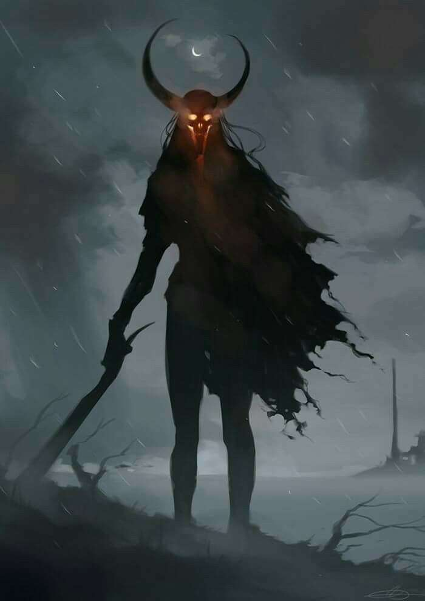

Ataques de criaturas estranhas em todos os planetas.
Desde 02/10 muitas criaturas começaram a atacar várias cidades em todo o multiverso. Em vários lugares ao mesmo tempo.
O governo contratou algumas pessoas para fazer um grupo que caça e registra essas criaturas, nele está nomes como Rosa Birgitta e Magret Emillya.
O governo de metrera, a igreja e a equipe do Cometa do presságio alerta a todos para ficarem em suas casas e andarem com pedregulhos de magia com a magia de teletransporte conectado a outros locais de sua confiança para que continue vivo.
Profanação de uma igreja no sul de Abbharkin:
Recentemente foi encontrado um altar cheio de restos mortais de diversas criaturas, além de ter inúmeros sinais de profanação. Estudiosos disseram que o local está inapropriado para circulação, afinal qualquer um que pisar ali sem estar devidamente preparado poderá ser morto.
O governo local alertou a população e colocou sinalização para todos ficarem longe e alguns guardas a aproximadamente 100km de distância da região.
Evento terram purgationem
Recentemente o grande evento feito pelo próprio papa Gregório Maxwell aconteceu em Santincrum. Lugar aonde reside a grande igreja purgatorii cunabula, igreja na qual é declarada como o centro de toda a fé no multiverso.
Devido a isso o evento acontece a cada 2 anos lá, e esse ano não foi diferente. O papa diz que sempre é necessário esse evento para eliminar todos os males que assolam a nossa época e que traz boas energias e exorciza as energias malignas. E esse ano estava necessitando devido a guerra contra metrera. Dessa vez 7 criminosos foram exorcizados enfraquecendo a energia do pecado que cada um representava no multiverso.
Esse ano Gregório divulgou a lista com a equipe do cometa do presságio, dos nomes de cada um, confira abaixo:
• Jeffrey Taylor
• Silvia De Magdala
• Ozumi Tanaka
• Francisco Godfrey
• Paola "Hax" Ynarim
• Erick Ranzenn
• Wanda Orento
Shinigami visto em Kawenkri:
Os moradores de Kawenkri relataram para os Darthenians no dia 02/10/3625 que uma grande criatura com chifres e que exalava morte, destruiu 70% da capital de Kawenkri incendiando as casas e matando todas as pessoas pelo caminho.
A equipe do cometa do presságio tentou falar com o Darthenian Nero Di Spades que estava presente na situação, porém ele nos respondeu com "Não falo com bandeirantes".
Conseguimos falar com a general Margot e ela disse: "O shinigami surgiu através de uma invocação, falei com os moradores e indentificamos a maga como Katherine Proudmoore. O ministério da magia e os darthenians já conversaram sobre o caso e providencias serão tomadas para resolver o caso, mas no momento não posso falar muito sobre o caso."
Apesar dos apesares, todos sabem que Kawenkri nunca mais será a mesma.

Nova criminosa da lista da calamidade:
Como foi dito na notícia acima surgiu uma nova criminosa em metrera que entrou na lista, agora temos a 14º criminosa, essa no momento é uma criminosa que ameaça bastante a nossa magia com profanações e invocações, devido a seu genocídio em Kawenkrin a igreja deu um título que até mesmo o ministério da magia aderiu, Katherine Proudmoore é conhecida como "A maga mais próxima de um demônio".
A família Proudmoore se pronunciou através de Adrian Proudmoore que deu um depoimento: "Como representante dos Proudmoore eu lamento as vítimas do genocídio de minha sobrinha, espero que todos eles estejam em algum lugar melhor aonde as almas podem descansar. Quero informar que atualmente ela está banida da casa e de todas as regiões da família, e estamos apoiando a decisão do ministério da magia para lidar com essa situação horrível que nossa família e a magia se encontra no momento."
Após o Pronunciamento muitos grupos começaram a gritar "morte a Katherine" e diversas pessoas foram ouvidas e todas com discursos de ódio a nova criminosa.
O ministério da saúde e diversas ONGs se comoveram com a situação das famílias.